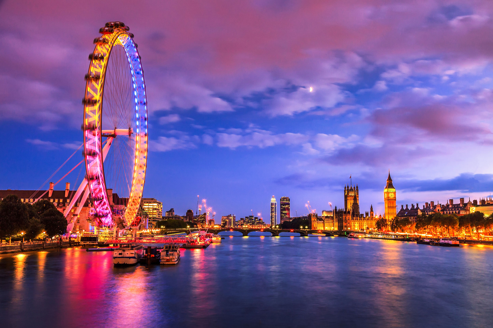

Torna indietro
Torna indietroBenvenuti in Europa
Quarto continente in termine di grandezza con oltre 734 milioni di abitanti,
L'europa con i suoi 48 stati ospita l'11% della popolazione mondiale
Clicca la freccia per andare in basso
Torna indietroQuarto continente in termine di grandezza con oltre 734 milioni di abitanti,
L'europa con i suoi 48 stati ospita l'11% della popolazione mondiale
Santorini,GreciaConsiderata la più romantica delle isole della Grecia e non solo, Santorini ha una forma circolare perché è parte di una parete di un grande cratere vulcanico.L’isola è un luogo spettacolare e molto particolare che custodisce la caldera sottomarina più grande del mondo |
Firenze,ItaliaFirenze considerata una delle città in ambito artisitico e culturale più famose al mondo.Qui potrete immergervi nella Firenze antica del medioevo grazie ai tanti musei che contengono dipinti,affreschi statue e molto altro... |
|

Londra,InghilterraLondra capitale del Regno Unito e dell'Inghilterra è una delle città più grandi d'Europa. È la terza piazza borsistica al mondo, dopo New York e Tokyo, e una delle principali città che influenzano il resto del mondo in fatto di cultura, comunicazione, politica, economia e arte. Londra è la città più popolata dell'Unione Europea |

Amsterdam,Paesi BassiAmsterdam, maggiore città e capitale dei Paesi Bassi, è un centro urbano incredibilmete variegato sotto moltissimi punti di vista, da quello storico a quello culturale passando anche per l'arte.In questa città una semplice passeggiata serale si trasforma in un'esperienza da portare nel cuore, |
© 2018 Traveller ALL RIGHTS RESERVED